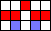

In August 2021, I downloaded an application called Golly and investigated two cellular automata of my own invention. The first rule, which I call Longevity, is a three-state automaton in which nearly all patterns exhibit infinite growth. Longevity has an extremely simple replicator and a wide variety of naturally-occuring spaceships. The second rule, Symmetrica, will be discussed in my next post.
The rules of Longevity are somewhat similar to the Game of Life, except that there are two types of live cells: young and old. Each generation, the following rules are applied to each cell:
- Dead cells become young if they have three live neighbors.
- Young cells become old if they have anything other than three live neighbors.
- Old cells become dead.
If you want to investigate Longevity in Golly yourself, click here to download the .rule file.
The patterns I've discovered consist of:
- one period 2 replicator,
- eight orthogonal spaceships with speed c/2 and periods ranging from 2 to 12,
- two period 4 mod 2 oscillators,
- one period 3 oscillator,
- one still life.
In the images below, red squares represent young cells and blue squares represent old cells.
Virus
replicator
period 2
Beetle
spaceship
period 12
Inchworm 1
spaceship
period 2
Inchworm 2
spaceship
period 2
Drone
spaceship
period 4/2
Jogger
spaceship
period 4/2
Limper
spaceship
period 4
Dragonfly
spaceship
period 6

Bomber
spaceship
period 8

Flag
oscillator
period 4/2

Council
oscillator
period 4/2
Ribbon
oscillator
period 3
The virus and all eight of the spaceships occur naturally; in other words, they can evolve from random starting configurations. The oscillators also form naturally, but only if the starting population is very small. Most patterns larger than about 5 by 5 cells will explode indefinitely, and any oscillators that form in the resulting chaotic stew will be very short-lived. The block, perhaps surprisingly, is the least natural pattern of all, and was the last pattern I discovered. I'm fairly certain that the block has no parent configurations other than itself.
A still life in Longevity must be made entirely of young cells, because old cells die unconditionally. Also, each cell in the still life must have exactly three live neighbors, because that is the only way for young cells to stay young in the next generation. This means that the block is Longevity's only still life. It's the only way to arrange cells in a square grid such that each has three neighbors.
The beetle is the most common spaceship, followed by the limper. The second rarest is the dragonfly, and the rarest (of those discovered so far) is the bomber. The dragonfly and the bomber are the only spaceships not based on a virus-like design. Therefore, it makes sense to call them "non-viral," and the other spaceships "viral."